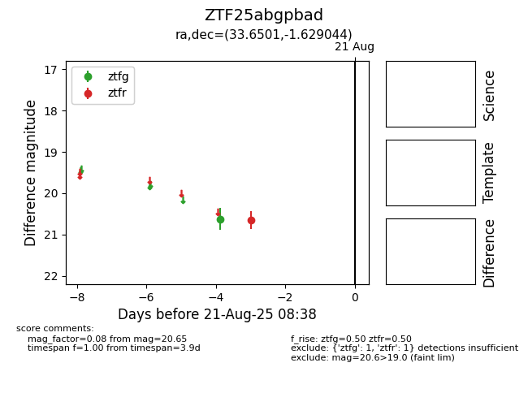

Target ZTF25abgpbad at 2025-08-21 08:38, see:
FINK: fink-portal.org/ZTF25abgpbad
Lasair: lasair-ztf.lsst.ac.uk/objects/ZTF25abgpbad
ALeRCE: alerce.online/object/ZTF25abgpbad
alt names
ZTF25abgpbad (ztf,alerce)
coordinates:
equatorial (ra, dec) = (33.6501,-1.62904)
galactic (l, b) = (164.4477,-57.63571)
photometry
last ztfg=20.62, ztfr=20.65
1 ztfg, 1 ztfr detections
